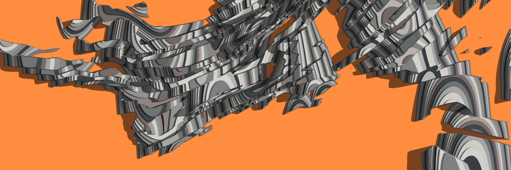
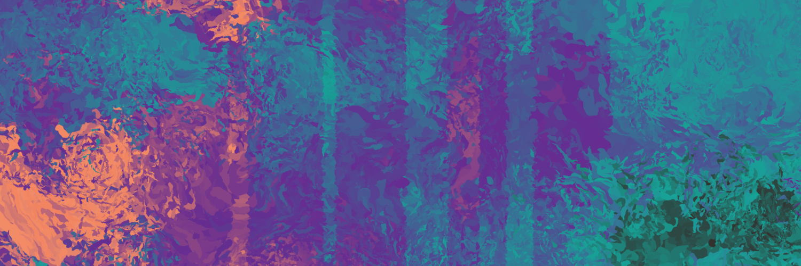

![]()
Content note: This post refers briefly to sexual assault
At the end of last year I wrote a wrap-up post listing the things I’d done during 2022, (A Very Strange Year), and perhaps I’ll do another one for 2023. Much like last time, I’ll break with my usual policy on this blog and be a little more open about my personal life. If you read last year’s post, you’d know that 2022 was a grim year for me. Among other things I got raped,1 and – in the world’s least-surprising plot twist – that messed me up rather badly. Losing my job at the end of 2022 didn’t help matters either.
What I didn’t anticipate when I wrote that post is that I was going to be unemployed for the majority of 2023. That was unpleasant. What I also didn’t see coming, is that rape trauma and unemployment interact with each other rather badly. On the one hand you start to feel worthless to society because you can’t find work, and on the other hand you also feel worthless as a human being because that’s what sexual assault does to you. So then you find yourself losing motivation to be upbeat and outgoing in the job search (and the job search gets worse), and you spend days on end lying in bed trying to believe you’re not a worthless person (and the trauma gets worse). Not exactly a deep insight, I’ll confess. Nevertheless, despite the triteness of the observation, the consequences are still real. Before the unemployment started to cut deep, I’d been making genuine progress in recovery from the sexual assault stuff, but after being out of work for a few months I went backwards.
Coming back from all that has been rough, and trying to work on recovery has been the dominant feature of 2023. I found work in the middle of the year, and am enjoying my new role. It’s nice to feel useful again. I’ve been doing better with the sexual assault fallout over the last few months too. I rarely get flashbacks these days, and I don’t fall to pieces (not often, anyway) whenever there’s another sexual assault story in the news. That’s real progress, and I’m proud of myself for that. But it’s still hard, and my self-confidence is in tatters. I’m working at it, but I suspect it will be a long and slow journey.
Anyway. Enough of that. Life is hard sometimes, and there’s not much to do except acknowledge from time to time that, yes, bad things happen. Let’s move on to other topics, shall we?
Data science, tech, and statistics
Not surprisingly given the focus on data science on this blog, I wrote a number posts about R packages and related topics in tech during 2023. Several of them were posts where I chose an R package that I wanted to play around with and wrote about it:
Others were built around a specific topic, though still very heavily focused on workflows in R:
Not all of my tech posts were about R though. Some are general purpose posts in which I taught myself new tools: learning about Docker and Kubernetes was fun, though in truth I’ve not had much opportunity to use either of these skills.2 On the other hand, learning about Makefiles was super useful and I’ve found myself using them a lot.3
- Playing with docker and the github container registry
- Deploying R with kubernetes
- Makefiles. Or, the balrog and the submersible
In a refreshing change for this blog – which has historically focused on code – I started writing a little more about statistical inference this year. Not as much as I’d have liked, and not as in-depth as I’d have liked either, but perhaps it will be the beginning of a trend for me. Two old statistics posts returned from the dead in 2023, both relics from my former life as an academic,4 and a third post estimating the number of internally displaced trans people within the United States:
- A gentle introduction to the Metropolis-Hastings algorithm
- A personal essay on Bayes factors
- On living in dark times
Finally, I wrote a couple of other posts on other topics broadly related to data science and software. My new personal machine is (for reasons!) using Windows as the primary OS, with an Ubuntu installation (no, not Arch) running concurrently thanks to Windows Subsystem for Linux. I wrote about some of the practicalities of using a setup like this, and specifically about how to use the RStudio IDE and VS Code effectively if you’re using linux for your data science work but you want your IDE to run smoothly as a windows application:
Oh, and I wrote a book review of Greg Wilson’s “Software design by example” in which I followed his guidance and wrote a regular expression tokeniser:
That one was fun, and I learned a lot.

Pharmacometrics
Around the middle of the year I managed to find work, which came as something of a relief. My new role is in pharmacometrics, and while the job is pretty intense – honestly, I’m working longer hours now than I did even as an academic – it’s been rewarding. There’s a lot of new and fascinating things to learn, and I do love being able to learn new things. That’s shown up in this blog quite a bit this year, with several posts discussing pharmacokinetic (PK) models generally and population-pharmacokinetic (pop-PK) models specifically:
- Non-compartmental analysis
- Simple PK models in Stan
- Minimal pop-PK models in Stan
- Getting started with pop-PK in Torsten
- Simulating from PK models with mrgsolve
- Simulating from PK models with rxode2
There’s several other topics in this area I want to write, especially now that my knowledge of the field is considerably stronger than it was when I wrote these pieces.5 It’s likely I’ll write more posts about pharmacometrics in 2024, but probably at a slower rate. That’s mostly because the nature of my employment is different these days: all my previous jobs before this one were in some sense public-facing roles, and writing blog posts about the substantive topic were part and parcel of the job itself. That’s not the case in my current role, so any writing I do is “off the books” so to speak, and only happens when I have spare time. Which is entirely okay, of course, but it’s hardly a surprise that it’s easier to find time to do a thing when it is central to your job than it is to do the same thing when it’s not actually part of the role!6

Art
On the art front, I changed course a bit in 2023. Early in the year I reluctantly concluded that there isn’t any point in trying to generate income from my art. I haven’t been taking commissions, I turned down a few opportunities to write books on generative art, and I haven’t been doing workshops the way I used to. There are a couple of reasons for that, but mostly they boil down to “return on investment”. It takes a lot of time, energy, and work to do the things that allow you to make money from art, and the bitter truth to it is that unless you’re one of the lucky few who “makes it big”, you really don’t make enough money from the art to justify the effort.7 People love art. They don’t love paying for it. Nowadays I don’t even bother to try: I make art when I feel like making art, I write about art when I feel like writing about art, and that’s it.
That doesn’t mean I abandoned making art of course, or even writing about it. I wrote three blog posts on generative art this year, for example:
I published seven art series on my art website, mostly created with R but also with javascript in some cases:
I even wrote a custom arttools R package that I use to help me manage my art workflows,8 and gave an invited talk at the University of Auckland on generative art (unpredictable paintings). I’m grateful to the lovely folks at Auckland for the invitation, and it was really wonderful to give the talk to such a kind audience.
So yeah. I’m still making art and sharing it on mastodon, but mostly as a hobbyist these days. I’ve lost any real desire to be a professional artist, and that’s okay. Sometimes a hobby can be just a hobby. Not everything in life needs to be a side hustle.
Footnotes
I honestly don’t like talking about any of this, but I also don’t want to hide the fact that it happened, so I’m not going to shy away from it. But also please don’t be like the stranger who messaged me after my 2022 post to tell me I should carry a gun. That’s not a helpful thing for anyone to tell a rape survivor, and it’s an especially terrible thing to say to her when you’re a man she doesn’t know.↩︎
I mean, let’s face it: while there’s a strong case to be made that Docker is an important tool for a lot of scientists, Kubernetes is … not. I learned it because it’s occasionally relevant for deploying applications at scale, but that’s not at all relevant in my current role.↩︎
Yes yes, I know, there are many alternatives, and if I’m an R person I should probably get off my lazy arse and learn targets but life is short and I am tired okay?↩︎
Strangely, despite being out of academia for over two years now, papers from that life still continue to trickle out, and another six journal articles emerged in 2023 that have my name on them. Academia really makes it hard for you to draw a line in the sand, which… actually is not great when the reason you left is not a pleasant one. Sigh.↩︎
Gonna be honest: I now look at most of these pieces and smile. They’re good posts, really, but I can now spot a lot of things in each of them that reveal that the author didn’t have a lot of practical experience with PK modelling at the time. But that’s good – that’s what happens when you learn things!↩︎
This lack of time, incidentally, is also the reason why (despite Hadley’s very kind support and encouragement) I haven’t made much progress on the project to work on the 3rd edition of the ggplot2 book, and haven’t done much of the work on updating my “learning statistics with R” book this year either. I’m sad about both of those things, and hoping that somehow I’ll be able to find some time in the future.↩︎
And, yes, with the rise of tools like DALL-E and midjourney, the situation has gotten worse over the past year.↩︎
Note that it’s not a tool for making generative art, it’s a tool for managing art repos and organising output in a format that makes it easy for me to publish art to my website. It’s also not intended for general use. I wrote the package for myself. For anyone else it’s a “use at your own risk” kind of deal. You can use it if it’s useful for you, but I have no intention whatsoever of maintaining it for any purpose except my own use.↩︎
Reuse
Citation
@online{navarro2023,
author = {Navarro, Danielle},
title = {Another Year Ends},
date = {2023-12-16},
url = {https://blog.djnavarro.net/posts/2023-12-16_another-year-ends},
langid = {en}
}